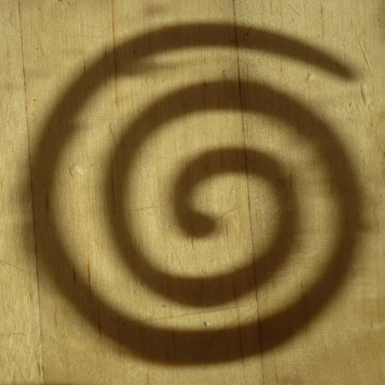

Zero
Ideias para Simplificar
Utilizador ou Criador?
Numa viagem Porto -> Lisboa que durou cerca de três horas pela auto estrada fez-me viajar pelo tempo em outras viagens que realizei no passado, sem autoestrada, com recurso a mapas e um tempo bastante superior de deslocação entre partida e chegada.
Dai foi fácil pensar nos automóveis e do tempo onde por exemplo não havia espelho retrovisor exterior, nem à direita nem à esquerda. Os vidro subiam e desciam com uma manivela e as mudanças eram manuais. Viajar exigia efetivamente a utilização dos cinco sentidos e pressionar o acelerador hoje substituído pelo "cruise control", onde a velocidade se mantém constante e em alguns caso até varia segundo a distância do veículo da frente. Estacionar era sem sensores, câmaras ou direção assistida. E hoje existem mesmo sensores que determinam o ritmo do limpa vidros segundo a quantidade de precipitação ou que acendem as luzes quando a luminosidade exterior diminui.
Viajar de automóvel é hoje muito semelhante ao piloto automático dos aviões onde o piloto faz a gestão do descolar e da aterragem deixando o resto para o computador de bordo.
No caso dos automóveis hoje é possível praticamente só dar a direção ao veículo e seguir as instruções de todos os preciosos sensores que avisam onde voltar e que botão carregar a seguir.
Mas além dos automóveis ouras áreas da nossa vida têm sido transformadas.
Cozinhamos utilizando robôs que conseguem produzir pão ou a mais complexa das iguarias que já mais imaginaríamos cozinhar de forma simples e com o mínimo de esforço nosso.
O GPS dá-nos a distância e instruções necessárias para chegar ao local que desejamos em alguns segundos. Injetamos-lhes números ou uma morada e é nos indicado o percurso mais fácil dispensando assim mapas ou o muito antigo hábito de "perguntar até chegar lá".
Podemos utilizar a rede de transportes públicos, chegando de forma rápida ao local pretendido, tornando a nossa mobilidade mais eficaz numa relação de tempo energia despendida.
Existem medicamentos que com um copo de água ou até mesmo sem ele tornam possível aliviar sintomas de forma quase imediata, poupando-nos a dores crónicas ou a situações de desconforto que nos impedem de desempenhar o nosso dia a dia de forma confortável.
Por um custo relativamente baixo podemos pagar a alguém que nos faça a refeição. Existem restaurantes das mais variadas proveniências e que nos permitem uma alimentação quase personalizada e diversa. Cozinhar pode ser assim um hábito que podemos delegar sem perder uma grande qualidade nos alimentos que consumimos.
Podemos escolher os produtos alimentares que queremos e adquiri-los pela internet. Algumas horas depois temos as compras à porta. O que nos poupa tempo e talvez dinheiro em deslocações e procura de alimentos.
Podemos criar um blog ou uma página na internet sem entender nada de programação deixando o tempo disponível efetivamente para a criação de conteúdos.
A vida tornou-se assim mais fácil.
A pergunta que podemos fazer é até que ponto a facilidade e a mecanização nos torna meros utilizadores da vida e não criadores da mesma?
Acho que é indescritível chegar a um lugar ermo apenas com uma bússola e um mapa.
Cozinhar uma refeição para a família onde desde as compras à preparação estivemos presentes e participamos no processo.
Descobrir que as nossas maleitas são na maior parte da nossa responsabilidade e rescrever essa história tornando-nos criadores da nossa saúde.
Praticar exercícios simples com regularidade que tornam o ginásio menos necessário e ao mesmo tempo nos ensinam a descobrir o nosso corpo.
Confiar nas pernas como meio de deslocação mais adequado à nossa condição humana.
Aprender um mínimo de programação e mudar um pequeno detalhe no blog ou a página de internet.
O desafio desta semana é fazer um inventário de algumas tarefas que somos apenas utilizadores e assumir o compromisso de nos tornarmos criadores.
E no fim do dia poder dizer - eu fiz isto e deixei a minha marca criativa no mundo.
Utilizador ou Criador?
Aceitam o desafio?
Alter do Chão, 17 de Junho 2013
Chama-se Andy Marshall e é mecânico de aviões
Este engenheiro da companhia EasyJet ganhou o prémio Spirit Awards pelo seu desempenho em 2012.
Andy entendeu que a qualidade do trabalho dos seus mecânicos na reparação e manutenção dos aviões dependiam grandemente de outros fatores como a forma como se alimentavam, como se exercitavam e a como regulavam os seus padrões de sono.
Inspirado com esta ideia criou um curso interno sobre nutrição baseado nos seus conhecimentos. A companhia aérea entendeu a dimensão do que estava a ser proposto e apoiou-o mobilizando enfermeiros, fisioterapeutas e nutricionistas.
O resultado foi algo que beneficiou não só o Andy mas também os seus colegas de trabalho e todos os que trabalham e viajam nesta companhia.
Quando pensamos que um homem pode fazer a diferença pela revolução podemos também pensar que um homem pode fazer a diferença pela evolução.
Criando novos padrões evolutivos na sua comunidade.
Acredito que no passado as revoluções eram as formas preferenciais de trilhar novos caminhos e quebrar ciclos antigos. E continuam apesar e tudo a ser uma opção possível.
Pessoas como o Andy mostram que a mudança e os novos ciclos também podem ser conseguidas não de forma súbita mas de forma gradual. Aqui e agora onde estamos, criando maior benefício, conhecimento e transformação no maior grupo de pessoas possível que vai por sua vez beneficiar as pessoas mais próximas desse grupo.
Cinco ideias para se tornar um conspirador evolucionário.
Pergunte: O que posso fazer durante esta semana pelas pessoas mais próximas? Um passeio a pé por um local que conhece bem. Cozinhar e partilhar uma refeição saudável com mais regularidade. Exercitarem-se juntos no parque ou em casa de forma consistente [...]
O que o apaixona e que pode partilhar? - agora! Sem ter de fazer qualquer curso ou absorver mais conhecimento. Geralmente é aquele assunto que é capaz de conversar durante horas. Ou uma formação que fez e que está a aplicar de forma prática na sua vida.
Pergunte: O que o impede de dar esse passo? - Compreenda que na maior parte das vezes os outros, o patrão, o estado não são mais que barreiras criadas por nós para nos manter na nossa área de conforto, culpando alguém por não querermos sair dela.
Mova-se passo a passo com uma atitude minimalista. As ideias simples e que envolvem poucos recursos são as mais fáceis de assimilar. Atividades que envolvem roupas especiais, adereços caros ou localizações exóticas embora mais atrativas numa primeira fase, tornam-se um obstáculo a longo prazo.
Alie-se a alguém se acha que sozinho não consegue, conspirem juntos e criem pela partilha das vossas paixões e capacidades.
Querem partilhar a vossa conspiração evolucionária? lourencoazevedo@gmail.com
Num voo entre Amesterdão e Portugal, 4 de Junho 2013
Aprender a focar
A ideia que pode ser transmitida do foco é a do samurai que consegue apesar de todas as adversidades manter o seu caminho resultado de uma concentração sobre-humana.
Eu tinha esta ideia de que quanto maior o foco maior seria as possibilidades de sucesso.
Até ao dia em que fiz o exame final do Curso de Medicina Tradicional Chinesa.
Este exame é um conjunto de cinco anos de Estudo de várias matérias, falhar este exame significava na altura ter de esperar mais um ano para o fazer.
Não havia segunda chamada.
Durante os meses que antecederam o exame estudei os temas propostos e planei com antecedência os dois dias em que estava dividido - um após o outro.
Fui ao ponto de comprar alimentos especiais para estar mais focado nesse dia, acordei à hora prevista, revi o material, almocei a jantei a minha fórmula especial de alimentos que me iam garantir foco e clareza mental para o grande momento.
E estava mesmo focado, não me lembro de estar tão focado até ai como naquele dia.
Cheguei ao exame pontualmente e comecei a responder às perguntas durante as três horas que demorava a prova, as respostas estavam claras e concisas.
estava já com dois terços das perguntas respondidas quando me pediram o exame.
(!!!)
...tinham passado três horas e eu estava tão concentrado, tão focado que nem dei pelo tempo passar.
Fiquei arrasado.
Voltei para casa desanimado e bastante pessimista.
Liguei para uma amiga minha na manhã seguinte e contei-lhe a história eram 10h.
Depois de me ouvir ela disse-me: "sabes o que deves fazer? Sai de casa e compra uma orquídea".
Eu tentei explicar-lhe que havia outro exame nesse dia, que tinha de estudar mais e que nem sequer sabia onde comprar uma orquídea.
A sugestão manteve-se do outro lado da linha.
Aceitei o desafio e saí de casa.
Quase três horas depois era o feliz possuidor de uma orquídea em cima da secretária.
Entretanto já era tarde. Fiz um almoço rápido e resolvi que devia fazer Chi Kung depois do almoço, quando terminei estava a meio da tarde.
Estudar tornou-se difícil naquele dia, estava inquieto, não me conseguia concentrar, sentava-me e levantava-me.
Decidi ir como estava, fechar os livros e dirigir-me para a escola.
E esse exame correu muito bem e terminei antes do tempo.
No final passei nas dois provas um por muito pouco [mesmo] e o segundo foi bastante acima da média.
Entretanto aprendi que estar focado é manter a visão periférica.
Descrever esta visão periférica é mais difícil do que descrever o que não é a esta visão.
Esta visão é perdida quando ficamos focados num só ponto e acreditamos que por isso mesmo não existe solução, que não existe plano B, existe tensão, existe ansiedade e muitas vezes desespero, às vezes acompanhado por tensão física nos ombros ou no estômago.
Tenho descoberto ao longo do tempo algumas atividades que me ajudam a criar essa visão periférica para além de sair de casa e ir comprar uma orquídea.
Estas atividades são tarefas que exigem largar o foco do momento.
Se estou bloqueado a escrever um artigo ou a criar algo, sair de casa e ir correr ou treinar não é simples. Parece que naquela altura nada pode ajudar a não ser escrever ou ficar ali até a resposta surgir. Mas tenho aprendido que quanto mais oposto for essa tarefa melhor é o resultado.
Algumas das minhas tarefas de eleição
- Treinar movimentos ou técnicas de Chi Kung que não treino habitualmente
- Andar de bicicleta
- Correr
- Caminhar durante 20 minutos
- Passear o cão
- Cozinhar
- Tarefas domésticas
- Bricolage
- Tomar um banho
- Telefonar a alguém e sair
Quais são os vossos becos sem saída?
Como lidam com eles?
Partilhem comigo as vossas descobertas - lourencoazevedo@gmail.com.
Amsterdão, 1 de Junho de 2013
Compreender para simplificar
Em Maio de 2013 numa sexta-feira preparava-me para escrever um post no meu blog a Arte do Cultivo da Quietude, quando teclei o endereço foi-me informado que o site tinha sido alvo de um ataque informático e estava suspenso por tempo indeterminado.
A interrupção foi breve até que a paz fosse restabelecida, no entanto, este pequeno incidente fez-me pensar como é fácil criar dependência de um sistema que:
- Não compreendemos
- Em que somos utilizadores com mobilidade bastante reduzida
- Em que existem demasiados intermediários entre o que fazemos até ao resultado final
Esta reflexão levou-me a aceitar o desafio de reativar as Viagens Ilimitadas sobre a forma do projeto Zero.
Este blog permite a mim que escrevo uma controle total dos processos de edição e o desafio de ser eu o criador do meu próprio sistema. Pode ser totalmente reprogramado e configurado à minha vontade e prazer.
Isso resulta numa liberdade total que não está dependente de qualquer empresa externa a mim como o Wordpress, o Google ou outras.
Para quem o lê, o meu compromisso é a de criar uma experiência efetiva de leitura sem anúncios ou demasiados links.
Imaginem-se ler um livro que tem incluída publicidade entre cada página ou referências constantes que o levam a outros livros ou a outros assuntos.
...
O panorama da escrita e publicação está mudar no sentido de uma maior simplicidade para que quem quer ler e aprender o possa fazer efetivamente sem distrações.
Para quem escreve esse deve ser o compromisso a assumir com os seus leitores - criar um ambiente minimalista que acolha a sua escrita, para quem lê essa deve ser o requisito mínimo - procurar conteúdos o menos poluídos possíveis.
Ambas as atitudes expressam para mim um mentalidade mais próxima da ecologia. Esse passo no sentido de algo mais ecológico e simples só se consegue quando compreendemos a fundo o que nos rodeia.
Este blog só é possível porque estudei alternativas para mudar para algo mais simples o que seria impensável à alguns meses atrás. Tive de mergulhar em linguagens de programação por exemplo.
Aquilo que queremos simplificar deve primeiro ser compreendido a fundo,
Sem compreender o ciclo de degradação dos materiais é natural que continue a poluir.
Sem compreender como os vários alimentos afetam o meu corpo é natural que não crie escolhas alimentares e hábitos de vida mais conscientes.
Se eu quero uma vida livre de dividas devo primeiro compreender a forma como gasto o meu dinheiro.
O mesmo se passa com a vontade de simplificar a nossa Saúde, vida pessoal ou profissional.
Compreender leva à simplificação.
Fica o desafio para esta semana.
Lisboa 27 de Maio de 2013

Chamo-me Lourenço de Azevedo e acredito no desenvolvimento do potencial humano pela prática regular do Chi Kung e pela simplificação de processos e ideias.
subscreva para aprender a criar mais com menos
Artigos Anteriores.
Utilizador ou Criador? Chama-se Andy Marshall e é mecânico de aviões Aprender a focar Compreender para simplificar 